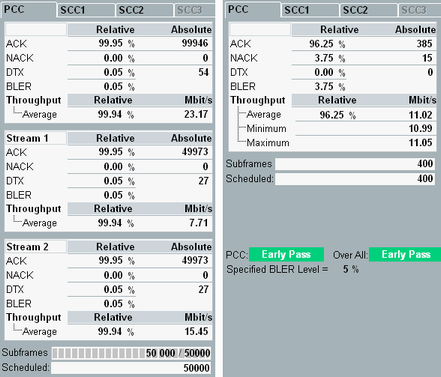

The "BLER" view provides a table of downlink BLER and throughput results. The table contains always an overall result section at the top (results over all streams of one carrier). For configurations with several downlink streams, it provides the results also per downlink stream.
For carrier aggregation scenarios, the results for the individual component carriers are presented on different tabs. The overall results for the sum of all component carriers are provided in the "Throughput" view.
The BLER view shows also common settings of the "LTE signaling" application, see "Settings".
The following figure shows the results of two measurements. On the left, you see the results of a measurement without stop condition and two downlink streams. On the right, you see the results of a confidence BLER measurement with one downlink stream.

- "ACK / NACK / DTX":
Number of acknowledgments and negative acknowledgments received via the PUSCH since the start of the measurement. No answer at all (no ACK, no NACK) is counted as DTX.
The results are presented as absolute number and as percentage relative to the number of sent scheduled subframes. - "BLER":
Block error ratio, percentage of sent scheduled subframes for which no acknowledgment has been received. The formula used to calculate the BLER is configurable, see "Error Ratio Calculation". By default the following formula is used:
BLER = (NACK + DTX) / (ACK + NACK + DTX) - "Throughput":
Throughput calculated from the number of acknowledged transport blocks (number of received ACK multiplied with bits per transport block, divided by the time).
The throughput is calculated for each 200 processed subframes. From the resulting throughput values, the instrument determines the average value and the minimum and maximum values.
The "Relative" average throughput indicates the average throughput as percentage of the theoretical maximum throughput, i.e. of the throughput that would be reached with ACK = 100%.
It is recommended to always activate downlink padding for throughput measurements, even in data application mode. Otherwise, the throughput results can be hard to interpret.
- "PCC or SCC Pass/Fail":When a pass/fail decision has been made for the carrier, one of the following result values is displayed:
– "Early Pass" / "Early Fail":
An early pass or early fail limit was exceeded and an early decision has been made.– "Pass" / "Fail":
The configured minimum test time is larger than the early decision table. The pass/fail decision has been made using the test limit.
The pass/fail decision is always based on the overall BLER results of the carrier, independent of the number of downlink streams.
When a pass/fail result is displayed for a carrier, the measurement can continue to derive the pass/fail result for another carrier and the overall pass/fail result. - "Over All Pass/Fail":
For measurements with carrier aggregation, an overall pass/fail result is derived from the PCC/SCC pass/fail results.
The meaning of the overall result depends on the configured "Over All Stop Decision". For the stop decision "PCC only", the overall result equals the PCC result. For the stop decision "SCC<n> only", the overall result equals the SCC<n> result.For the "All Carrier, ..." stop decisions, the overall result has the following meaning:– "Early Fail": at least one carrier "Early Fail" – "Fail": no carrier "Early Fail", at least one carrier "Fail" – "Early Pass": all carriers "Early Pass" – "Pass": at least one carrier "Pass", no "Fail", no "Early Fail" - "Specified BLER Level":
Indicates the currently configured "Limit Error Rate".
For "Subframes" and "Scheduled", see "Common View Elements".